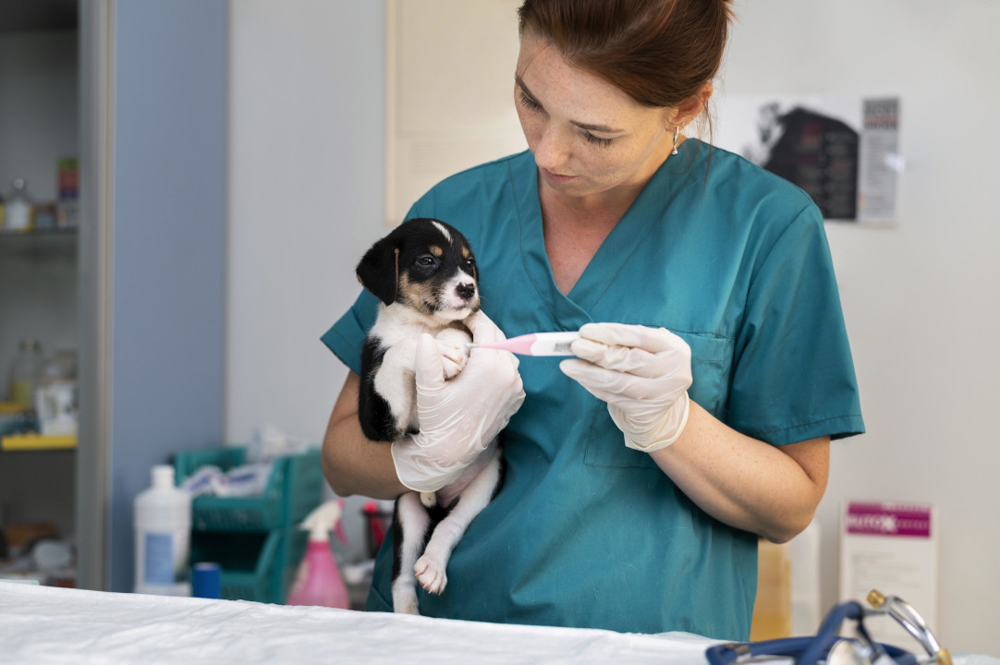
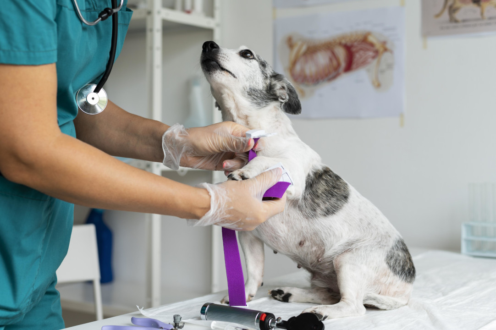
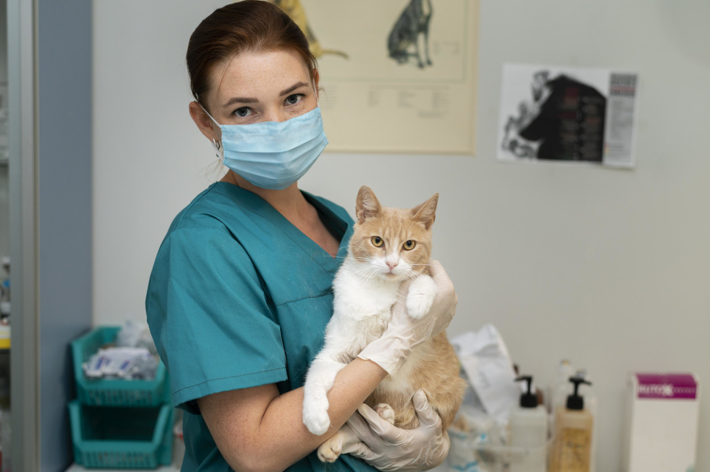
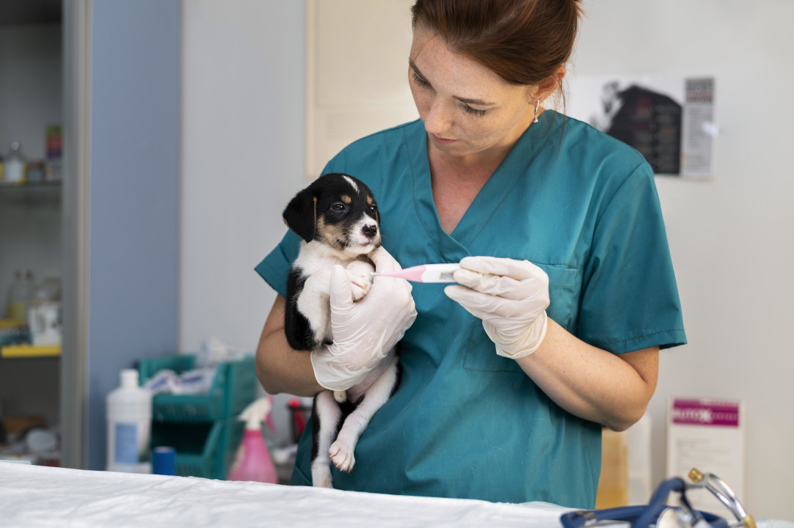
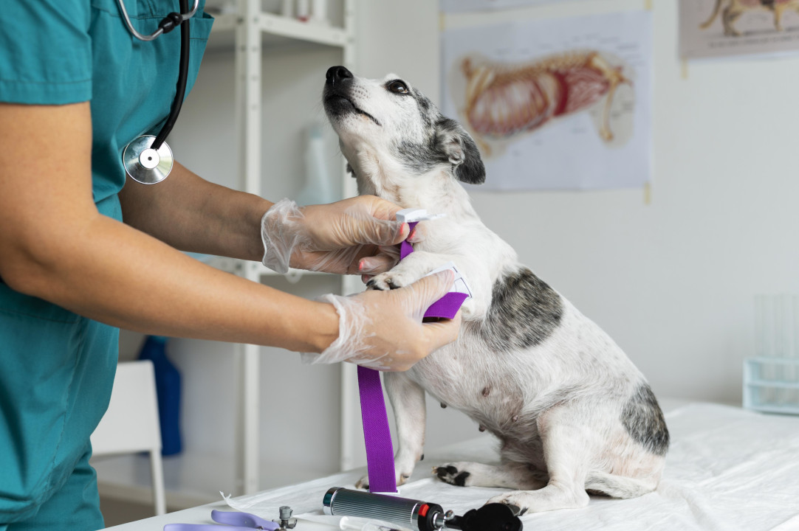
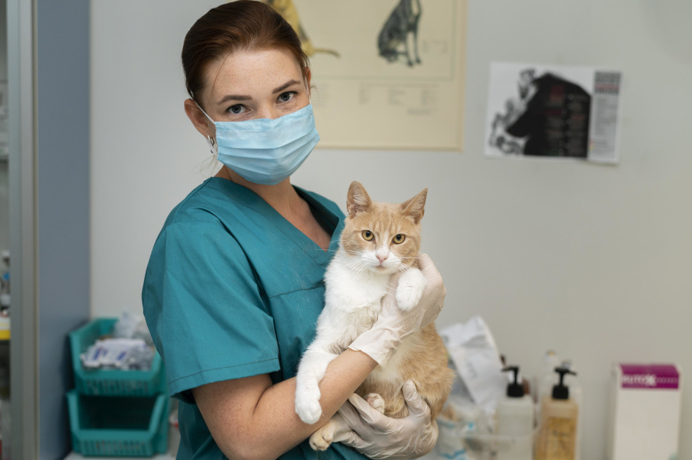
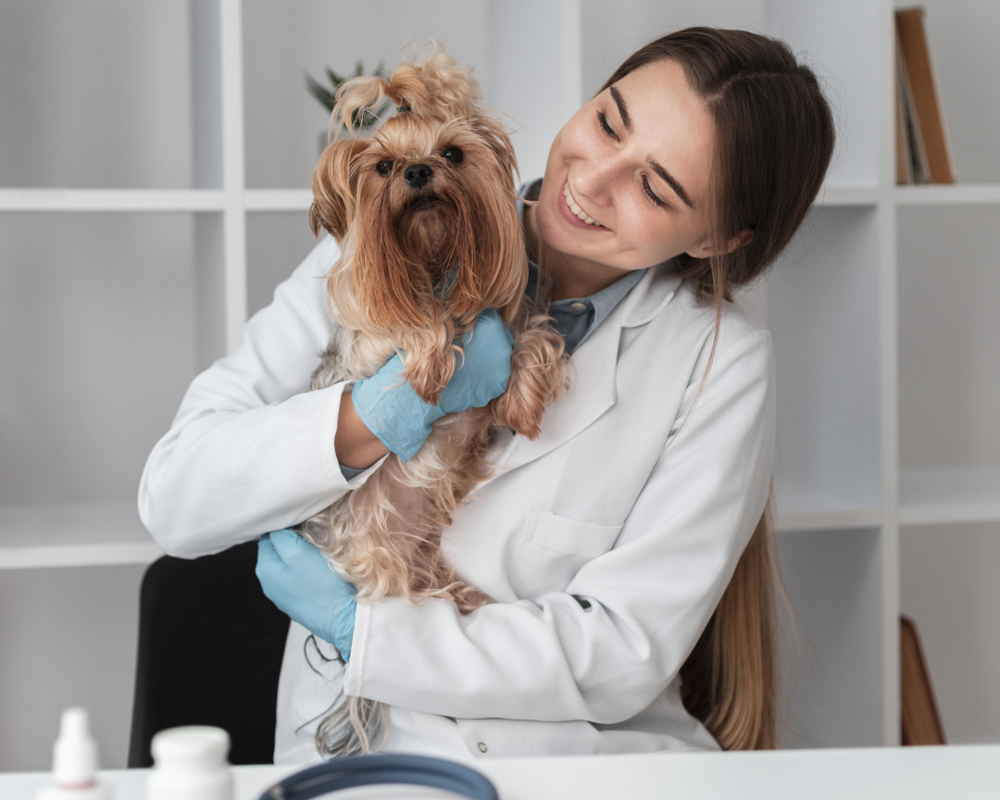
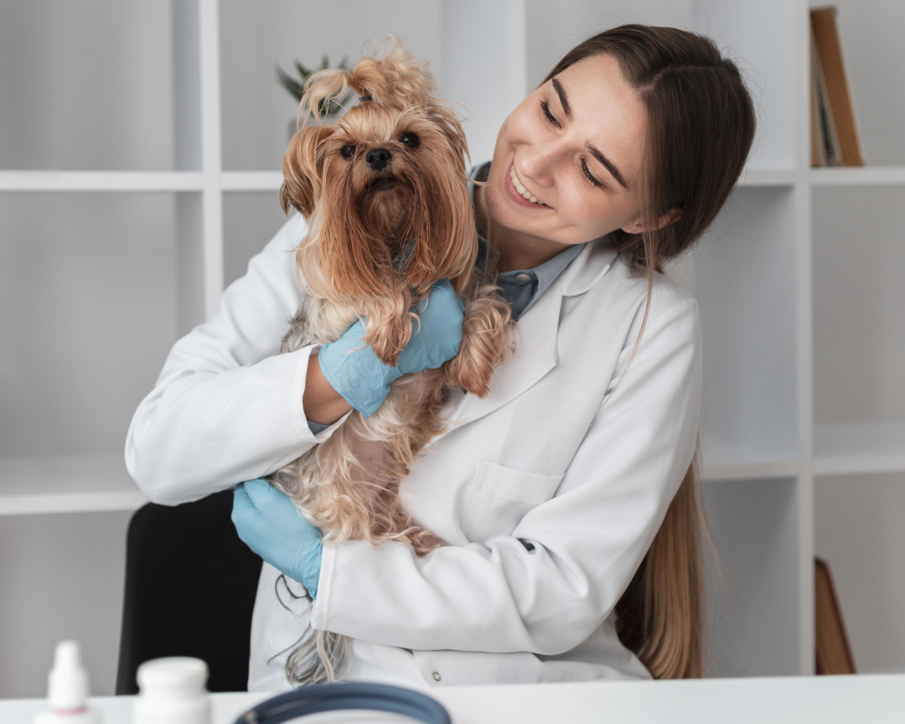

Sobre Nós
Bem-vindo à Animal Care, a sua clínica veterinária de confiança para cuidados com seus animais de estimação. Aqui, nossos profissionais altamente qualificados estão dedicados a fornecer aos seus animais de estimação o melhor atendimento possível, garantindo que eles recebam cuidados de qualidade e personalizados.
A Animal Care está localizada em uma área privilegiada e de fácil acesso, oferecendo um espaço confortável e moderno para você e seus animais de estimação. Nossa clínica conta com equipamentos e tecnologias de ponta para garantir diagnósticos precisos e tratamentos eficazes.
Nossa equipe de profissionais é formada por médicos veterinários experientes e qualificados, que trabalham em conjunto para fornecer aos seus animais de estimação atendimento abrangente e personalizado. Nossos veterinários têm anos de experiência em medicina veterinária e estão sempre atualizados sobre as últimas técnicas e tratamentos.
 







 
